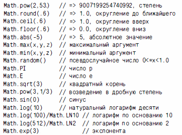
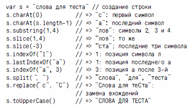
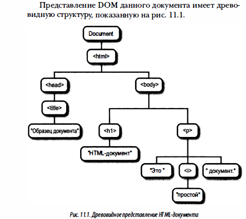
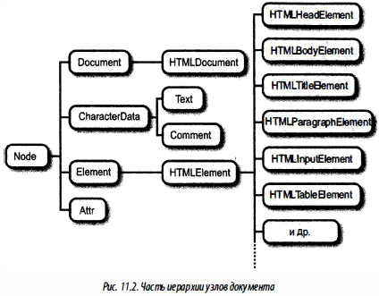
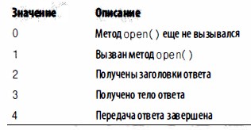

Общее
Комментарии
// Это однострочный комментарий
/* Многострочный комментарий */
Типы данных, значения и переменные
Числа в диапазоне значений ±1.7976931348623157Е+308
По умолчанию значение NaN. Чтобы проверить используйте isNaN() или x!=x
Функции сложных арифметических вычислений

Текст — строка упорядоченная последователность 16-битовых значений.
Строковые литералы: одинарные ( ' ) или двойные ( “ ) кавычки.
Объединение строк: msg = “Привет ” + “ Мир!”;
Получить длину строки: msg.length
Методы по работе со строками:
Строки можно интерпретировать как массив:
str = “Hello World!”;
str[0];
str[str.length-1];
Булевы значения — одно из двух состояний true или false
null и undefined – указывают на отсутствие определённого значения
Глобальный объект - В коде верхнего уровня использовать ссылку на глобальный объект:
var global = this;
Преобразование типов — интерпретатор весьма гибкий по отношению к типам.
10 + « Текст» // число 10 преобразуется в текст «10 Текст»
«7» * «4» // текст преобразуется в число 7 * 4
var n = 1 - “x”; // строку нельзя преобразовать NaN
n + « Текст» // n равно NaN это будет преобразовано в строку «NaN Текст»
Явное преобразование типов с помощью функций:
Number(“3”)
String(100)
Boolean([])
Object(3)
n.toString()
Функции синтаксического анализа:
parseInt(“3 мышки”) // получим число 3
parseFloat(“3.14 метра”) // получим число 3.14
Объявление переменных
Объявление переменных выполняется с помощью ключевого слова var
var result;
var i, sum;
var message = “Hello World!”;
var i = 0, j = 0, k = 0;
Инициализаторы
Массивы
[] // Пустой массив
[1+2, 3+4] // Массив из двух элементов
var matrix = [ [1,2,3], [4,5,6], [7,8,9] ]; // Многомерный массив
Объекты
var a = {x:2, y:1}; // Объект с двумя свойствами
var b = {}; // Пустой объект без свойств
b.x = 2; b.y = 1; // Добавляем свойства пустому объекту
var rectangle = {left: {x:2, y:2}, right: {x:4, y:5}}; // Вложенные
Обращение к свойствам
Две формы обращения к свойству:
var obj = {x:1, y:2};
obj.x // выражение.идентификатор
obj[“y”] // выражение[выражение]
Определение функции — определение как переменная.
var square = function(x) { return x*x;} // объявление функции
var n = square(5);
Создание объекта — выполняется с помощью ключевого слова new
Если аргументы передавать не нужно скобки можно опустить
new Object;
new Data;
new Object();
new Point(2,3);
Операторы
++, - - Префиксный или постфиксный инкремент/декремент
delete Удаление свойства
typeof Вычисление типа операнда
void Возврат неопределённого значения
instanceof Проверка класса объекта
in Проверка существования свойства
+, - Сложение, вычитание
*, /, % Умножение, деление, остаток от деления
<, <= Меньше, меньше или равно
>, >= Больше, больше или равно
==, === Равенство, строгое равенство
!=, !== Неравенство, строгое неравенство
&&, | | И, Или
?: Выбор из двух операторов
+=, -=, *=, /=, &=, ^=, |=, <<=, >>=, >>>= Операции и присваивание
Интерпретация строк кода – используется функция eval() или execScript()
eval(“3+2”);
eval(“var y = 3;”);
eval(“function f() { return 0; }”);
Условный оператор ?:
var result = x > 0 ? 10 : -10;
var check = user ? “yes” : “no”
Инструкции
Пустые инструкции
{
pi = Math.Pi;
console.log(“PI = ” + pi);
}
Функции
var f = function(x) {return x+1;}
function f(x) {return x+1;}
Условия
if (n == 1) {
//...
}else if (n == 2) {
//...
}else{
//...
}
Выбор
switch(n){
case 1:
//...
break;
case 2:
//...
break;
default:
//...
break;
}
Циклы
var count = 0;
while (count < 10) {
count++;
}
var count = 0;
do {
count++;
} while(count < 10);
for(var count = 0; count < 10; count++) {
//...
}
for(var k in obj)
console.log(obj[k]);
Переходы — операторы: break, continue, return, try/catch/finally
Помеченные инструкции
mainloop: while(token != null){
continue mainloop;
}
Исключение — сигнал о произошедшей ошибке
if(x < 0) throw new Error(“x должен быть положительным”)
Обработка исключений
try {
//...
} catch(ex) {
alert(ex);
} finally {
//...
}
Директива строгого режима – переключает интерпретатор в строгий режим.
В строгом режиме используется ограничение подмножество языка, устраняющее ряд дефектов платформы, повышая уровень проверки ошибок и безопасность.
“use strict”
Объекты
Объектные литералы
var empty = {};
var point = {x:0, y:0};
var point2 = {
x: point.x,
y: point.y+1
};
var book = {
“main title”: “JavaScript”,
'sub-title': “Pocket Ref”,
“for”: “all audiences”
};
Ключевое слово new
var o = new Object();
var a = new Array();
var d = new Date();
var = new RegExp(“js”);
Прототипы
Object.prototype
Array.prototype
Date.prototype
Создание объекта с помощью метода Create
var obj = Object.create(null);
var obj = Object.create({x:1, y:2});
var obj = Object.create(Object.prototype);
Свойства — Чтение и запись свойств
var book = {author: “John”, “main title”: “JavaScript”};
var author = book.author;
book.author = “Paul”;
book[“main title”] = “ECMAScript”;
Наследование свойств
var objA = {};
objA.x = 10;
var objB = inherit(objA); // наследует свойства объекта
objB.y = 20;
console.log(objB.x);
Удаление свойств
var book = {author: “John”, “main title”: “JavaScript”};
delete book.author
delete book[“main title”];
Проверка свойств
var obj = {x: 1}
“x” in obj; // true свойство есть
“y” in obj; // false свойства нет
obj.y !== undefined // false свойства нет
obj.hasOwnProperty(“x”); // true свойство есть
var obj2 = inherit({y: 2});
obj2.propertyIsEnumerable(“x”); // true свойство унаследовано
Перечисление свойств
Object.keys() - возвращает массив имён заданых собственных свойств
Object.getOwnPropertyNames() - возвращает имена всех свойствами
var obj = {x:1, y:2, z:3};
for(p in obj) console.log(p);
Сериализация свойств и объектов — процесс преобразование объекта в строку
var obj = {x:1, y:[false, null, “”]};
var s = JSON.stringify(obj);
var p = JSON.parse(s);
Методы чтения и записи свойств
var obj = {
xyz: 1.0,
get funcValue() {
return this.xyz;
},
set funcValue(value){
this.xyz = value;
}
};
Атрибуты свойств
Object.getOwnPropertyDescriptor() - получить дескриптор свойства заданного объекта
Object. getOwnPropertyDescriptor(obj, “funcValue”);
Object.defineProperty() - для установки атрибута или создания своства с заданными атрибутами.
var obj = {};
Object.defineProperty(obj, “x”, {value: 1, writable: true});
Атрибуты объекта
prototype – атрибут прототипа задает объект, от которого данный объект наследует свойства.
var objA = {x:1}
var objB = Object.create(objA);
objA.isPrototypeOf(objB) // true - objB наследует от objA
Object.prototype.isPrototypeOf(objB) // true – для любого объекта
class – атрибут класс содержит строку с информацией о типе объекта.
Function classof(obj){ // возвращает класс объекта
if(obj === null) return “null”;
if(obj === undefined) return “undefined”;
return Object.prototype.toString.call(obj).slice(8, -1);
}
extensible – атрибут расширяемый задает, можно ли добавить в объект новое свойство.
Object.isExtensible() - определить является ли объект расширенным
Object.seal() - делает объект расширяемым
Object.isSealed() - определяет вызывается ли метод seal
Object.freeze() - блокирует объект
Object.ifFrozen() - определяет заморожен ли объект
obj = Object.seal(Object.create(Object.freeze({x:1}), {y:2}));
Массивы - упорядоченный набор значений.
Первый элемент 0, а максимальный то есть 4294967294.
Создание массива
var empty = [];
var primes = [2, 3, 5, 7];
var misc = [{}, true, “a”];
var count = [1,,3];
var undefs = [,,];
var matrix = [[1,2],[3,4]];
var matrix = [ [1, {x:1, y:2}], [2, {x:3, y:4}] ];
var a = new Array();
var b = new Array(10);
var c = new Array(1, 2, 3, “text”);
Элементы и длина массива
var a = [“world”]; // создание массива
var value = a[0]; // чтение элемента
a[1] = 3.14; // запись элемента
var b = [1,2,3,4,5];
b.length; // длина массива
b.length = 3; // теперь массив [1,2,3]
Перечисление элементов массива
var values = [];
for(var i = 0; i < 10; i++){
values[i] = i;
}
var arr = [1,2,3,4,5];
arr.forEach(function(item, i, arr){
alert( i + “: ” + item + “ (массив: ” + arr + “)” );
});
Многомерный массив
var table = new Array(10); // 10 строк таблицы
for(var i=0; i<table.length; i++){
table[i] = new Array(5); // 5 столбцов
}
for(var row=0; row<table.length; row++){
for(var col=0; col<table[row].length; col++){
table[row][col] = row*col;
}
}
Методы массивов
join() - преобразует все элементы массива в строку
var a = [1,2,3];
a.join(); // 1,2,3
a.join(“ “); // 1 2 3
a.join(“”); // 123
split() - преобразует строку в массив
a.split(“1,2,3”);
reverse() - изменяет последовательность массива на обратную и возрастающую.
var a = [1,2,3];
a.reverse(); // 3,2,1
sort() - сортирует элементы массива
var a = new Array(“вишня”, “яблоко”, “апельсин”)
a.sort(); // в алфавитном порядке
a.sort(function(a,b){ // обратный порядок
return b-a;
});
concat() - соединяет массивы
var a = [1,2,3];
a.concat(4, 5); // [1,2,3,4,5]
a.concat([6,7]); // [1,2,3,4,5,6,7]
a.concat(8, [9, [10,11]]); // [1,2,3,4,5,6,7,8,9,[10,11]]
slice() - возвращает фрагмент массива
var a = [1,2,3,4,5];
a.slice(0,3); // [1,2,3]
splice() - вставляет новый или удаляет существующий элемент массива
var a = [1,2,3,4,5,6,7,8];
a.splice(4); // массив теперь [1,2,3,4]
a.splice(1,2); // массив теперь [1,4]
var b = [1,2,3,4,5];
b.splice(2, 0, 'a', 'b'); // массив теперь [1,2,'a','b',3,4,5]
push() - добавляет элемент в конец стека
pop() - удаляет последний элемент стека
var stack = [];
stack.push(1,2); // массив теперь [1,2]
stack.pop(); // массив теперь [1]
unshift() - добавляем элемент в начало стека
shift() - удаляет первый элемент стека
stack.unshift(1); // массив теперь [1,1]
stack.shift(); // массив теперь [1]
toString() - преобразует каждый элемент в строку
[1,2,3].toString();
Методы массивов ECMAScript 5
forEach() - проходит по массиву вызывая функцию для каждого элемента.
var data = [1,2,3,4,5];
data.forEach(function(value){
console.log(value);
});
data.forEach(function(value, i, array){
array[i] = value + 1;
});
map() - передает функции каждый элемент массива, и возвращает новый массив.
var a = [1,2,3];
var b = a.map(function(v){return v*v}); // теперь массив [1,4,9]
filter() - фильтр массива
var a = [5,4,3,2,1];
a.filter(function(x){return x < 3}); // возвращает [2,1]
every() - возвращает true если функция вернула true для каждого элемента
var a = [1,2,3,4,5];
a.every(function(v){return x < 10;});
some() - возвращает true если существует хотя бы один элемент функция которого true
var a = [1,2,3,4,5];
a.every(function(v){return x%2 === 0;});
reduce() и reduceRight() - объединяют элементы массива для с помощью функции
var a = [1,2,3,4,5];
a.reduce(function(x,y){return x+y}, 0);
indexOf() и lastIndexOf() - ищут в массиве элемент с заданным значением
var a = [0,1,2,1,0];
a.indexOf(1); // вернёт индекс 1
a.lastIndexOf(1); // вернёт индекс 3
Строки в качестве массивов
var s = “test”;
s.charAt(0); // “t”
s[1]; // “e”
Функции
Определение функций
function point(x, y) {
//...
}
var point = function(x, y){
//...
}
Вложенные функции
function func1(a, b) {
function func2(x) {return x*x;}
return func2(a) + func2(b);
}
Методы
var summa = {
a: 10,
b: 20,
plus: function() {
this.result = this.a + this.b;
}
};
summa.add(); // вызов метода
summa.result; // 30
Косвенный вызов
call() и apply() - позволяют вызвать функцию
trace() - получает имена объектов и методов и заменяет указанные метод новым.
var b = Math.max.apply(Math, array_of_numbers);
Функции как пространство имён
function mymodule() {
// здесь поместить модуль кода
}
mymodule();
Можно определить через вызов анонимной функции
(function() {
// здесь поместить модуль кода
}());
Замыкания
Замыкания захватывают локальные переменные единственного вызова функции, что дает возможность использовать эти переменные в качестве закрытых.
var uniqueInteger = (function() {
var counter = 0;
}());
Методы
length – определяет количество аргументов
prototype – ссылка на прототип функции
toString() - возвращает полный исходный код функции.
bind() - связывание функций с объектом.
function my_func(y) { return this.y + x; }
var obj = {x:1};
var func = my_func.bind(obj);
func(2); // результат 3
Классы
Классы и прототипы (простой класс)
function range(from, to) // функция, возвращающая диапазон
{
var r = Object.create(range.methods);
r.from = from;
r.to = to;
return r;
}
range.methods = { // объект прототипа определяет методы
includes: function(x) {
return this.from <= x && x <= this.to;
},
foreach: function(f) {
for(var i = this.from; i <= this.to; i++) f(i);
},
toString: function() {
return “(” + this.from + “ ” + this.to + “)”;
}
};
// пример использования
var r = range(1,3);
r. includes(2);
r. foreach(console.log);
Классы и конструкторы (прототипы)
function Range(from, to) // функция конструктов
{
this.from = from;
this.to = to;
}
Range.prototype = {
includes: function(x) {
return this.from <= x && x <= this.to;
},
foreach: function(f) {
for(var i = this.from; i <= this.to; i++) f(i);
}
};
// пример использования
var r = new Range(1,3);
r. includes(2);
r. foreach(console.log);
Свойство constructor – значением этого свойства является объект функция.
Range.prototype = {
constructor: Range, // явная установка конструктора
includes: function(x) {
return this.from <= x && x <= this.to;
},
foreach: function(f) {
for(var i = this.from; i <= this.to; i++) f(i);
}
};
Подклассы (наследование)
function Animal(name) {
this.name = name;
this.speed = 0;
}
Animal.prototype.run = function(speed) { this.speed += speed; };
Animal.prototype.stop = function() { this.speed = 0; };
function Rabbit(name) {
this.name = name; this.speed = 0;
}
Rabbit.prototype = Object.create(Animal.prototype); // наследование
Rabbit.prototype.jump = function() { this.speed++; };
Регулярные выражения
Описание шаблонов с помощью регулярных выражений RegExp("pattern"[, флаги])
var pattern = /s$/;
var pattern = new RegExp(“s$”);
var reg = /ab+c/i;
var reg = new RegExp("ab+c", "I");
Строковые методы, поиск и замена
“JavaScript”.search(/script/i);
text.replace(/javascript/gi, “JavaScript”); // унификация регистров букв
var pattern = /Java/g;
var text = “JavaScript лучшее чем Java”;
var result;
while ( (result = pattern.exec(text)) != null )
{
console.log(result[0], result.index, pattern.lastIndex);
}
var pattern = /java/i;
pattern.test(“JavaScript”); // вернёт true
Спецсимволы в регулярном выражении
Символ |
Значение |
\ |
Для обычных символов - делает их специальными. Например, выражение /s/ ищет просто символ 's'. А если поставить \ перед s, то /\s/ уже обозначает пробельный символ.И наоборот, если символ специальный, например *, то \ сделает его просто обычным символом "звездочка". Например, /a*/ ищет 0 или больше подряд идущих символов 'a'. Чтобы найти а со звездочкой 'a*' - поставим \ перед спец. символом: /a\*/. |
^ |
Обозначает начало входных данных. Если установлен флаг многострочного поиска ("m"), то также сработает при начале новой строки.Например, /^A/ не найдет 'A' в "an A", но найдет первое 'A' в "An A." |
$ |
Обозначает конец входных данных. Если установлен флаг многострочного поиска, то также сработает в конце строки.Например, /t$/ не найдет 't' в "eater", но найдет - в "eat". |
* |
Обозначает повторение 0 или более раз. Например, /bo*/ найдет 'boooo' в "A ghost booooed" и 'b' в "A bird warbled", но ничего не найдет в "A goat grunted". |
+ |
Обозначает повторение 1 или более раз. Эквивалентно {1,}. Например, /a+/ найдет 'a' в "candy" и все 'a' в "caaaaaaandy". |
? |
Обозначает, что элемент может как присутствовать, так и отсутствовать. Например, /e?le?/ найдет 'el' в "angel" и 'le' в "angle."Если используется сразу после одного из квантификаторов *, +, ?, или {}, то задает "нежадный" поиск (повторение минимально возможное количество раз, до ближайшего следующего элемента паттерна), в противоположность "жадному" режиму по умолчанию, при котором количество повторений максимально, даже если следующий элемент паттерна тоже подходит.Кроме того, ? используется в предпросмотре, который описан в таблице под (?=), (?!), и (?: ). |
. |
(Десятичная точка) обозначает любой символ, кроме перевода строки: \n \r \u2028 or \u2029. (можно использовать [\s\S] для поиска любого символа, включая переводы строк). Например, /.n/ найдет 'an' и 'on' в "nay, an apple is on the tree", но не 'nay'. |
(x) |
Находит x и запоминает. Это называется "запоминающие скобки". Например, /(foo)/ найдет и запомнит 'foo' в "foo bar." Найденная подстрока хранится в массиве-результате поиска или в предопределенных свойствах объекта RegExp: $1, ..., $9.Кроме того, скобки объединяют то, что в них находится, в единый элемент паттерна. Например, (abc)* - повторение abc 0 и более раз. |
(?:x) |
Находит x, но не запоминает найденное. Это называется "незапоминающие скобки". Найденная подстрока не сохраняется в массиве результатов и свойствах RegExp.Как и все скобки, объединяют находящееся в них в единый подпаттерн. |
x(?=y) |
Находит x, только если за x следует y. Например, /Jack(?=Sprat)/найдет 'Jack', только если за ним следует 'Sprat'. /Jack(?=Sprat|Frost)/ найдет 'Jack', только если за ним следует 'Sprat' или 'Frost'. Однако, ни 'Sprat' ни 'Frost' не войдут в результат поиска. |
x(?!y) |
Находит x, только если за x не следует y. Например, /\d+(?!\.)/найдет число, только если за ним не следует десятичная точка. /\d+(?!\.)/.exec("3.141") найдет 141, но не 3.141. |
x|y |
Находит x или y. Например, /green|red/ найдет 'green' в "green apple" и 'red' в "red apple." |
{n} |
Где n - положительное целое число. Находит ровно n повторений предшествующего элемента. Например, /a{2}/ не найдет 'a' в "candy," но найдет оба a в "caandy," и первые два a в "caaandy." |
{n,} |
Где n - положительное целое число. Находит n и более повторений элемента. Например, /a{2,} не найдет 'a' в "candy", но найдет все 'a' в "caandy" и в "caaaaaaandy." |
{n,m} |
Где n и m - положительные целые числа. Находят от n до m повторений элемента. |
[xyz] |
Набор символов. Находит любой из перечисленных символов. Вы можете указать промежуток, используя тире. Например, [abcd] - то же самое, что [a-d]. Найдет 'b' в "brisket" и 'c' в "ache". |
[^xyz] |
Любой символ, кроме указанных в наборе. Вы также можете указать промежуток. Например, [^abc] - то же самое, что [^a-c]. Найдет 'r' в "brisket" и 'h' в "chop." |
[\b] |
Находит символ backspace. (Не путать с \b.) |
\b |
Находит границу слов (латинских), например пробел. (Не путать с [\b]). Например, /\bn\w/ найдет 'no' в "noonday"; /\wy\b/ найдет 'ly' в "possibly yesterday." |
\B |
Обозначает не границу слов. Например, /\w\Bn/ найдет 'on' в "noonday", а /y\B\w/ найдет 'ye' в "possibly yesterday." |
\cX |
Где X - буква от A до Z. Обозначает контрольный символ в строке. Например, /\cM/ обозначает символ Ctrl-M. |
\d |
находит цифру из любого алфавита (у нас же юникод). Используйте [0-9], чтобы найти только обычные цифры. Например, /\d/ или /[0-9]/ найдет '2' в "B2 is the suite number." |
\D |
Найдет нецифровой символ (все алфавиты). [^0-9] - эквивалент для обычных цифр. Например, /\D/ или /[^0-9]/ найдет 'B' в "B2 is the suite number." |
\f,\r,\n |
Соответствующие спецсимволы form-feed, line-feed, перевод строки. |
\s |
Найдет любой пробельный символ, включая пробел, табуляцию, переводы строки и другие юникодные пробельные символы. Например, /\s\w*/ найдет ' bar' в "foo bar." |
\S |
Найдет любой символ, кроме пробельного. Например, /\S\w*/найдет 'foo' в "foo bar." |
\t |
Символ табуляции. |
\v |
Символ вертикальной табуляции. |
\w |
Найдет любой словесный (латинский алфавит) символ, включая буквы, цифры и знак подчеркивания. Эквивалентно [A-Za-z0-9_]. Например, /\w/ найдет 'a' в "apple," '5' в "$5.28," и '3' в "3D." |
\W |
Найдет любой не-(лат.)словесный символ. Эквивалентно [^A-Za-z0-9_]. Например, /\W/ и /[^$A-Za-z0-9_]/ одинаково найдут '%' в "50%." |
\n |
где n - целое число. Обратная ссылка на n-ю запомненную скобками подстроку. Например, /apple(,)\sorange\1/ найдет 'apple, orange,' в "apple, orange, cherry, peach.". За таблицей есть более полный пример. |
\0 |
Найдет символ NUL. Не добавляйте в конец другие цифры. |
\xhh |
Найдет символ с кодом hh (2 шестнадцатиричных цифры) |
\uhhhh |
Найдет символ с кодом hhhh (4 шестнадцатиричных цифры). |
JavaScript на стороне клиента
Внедрение кода в HTML-документ
<html>
<head>
<script src = “../../scripts/util.js”></script>
<script>
function onLoad() { alert(“Hello World!!!”);}
window.onload = onLoad;
</script>
</head>
<body></body>
</html>
Программирование на основе событий
Объект окна.
window – главная точка входа во все клиентские средства JS и функции API
window.location = “http://www.google.com”;
window.alert(“hello”);
window.setTimeout(function(){ alert(“hello”) }, 2000);
window.document
Таймеры
setTimeout(function(){ alert(“hello”) }, 2000);
setInterval(function(){ alert(“hello”) }, 60000);
clearInterval();
Диалоговые окна
var name = prompt(“Введите своё имя”);
if(confirm(“Имя” + name + “ правильное?”)){
alert(“Здравствуйте ” + n);
}
Работа с документами
Обзор модели DOM

Обратите внимание на формальное различие между типами Document и Element с одной стороны и типами HTMLDocument и HTMLElement - с другой. Тип Document представляет документ HTML или XML, а тип Element - элемент документа.

Выбор элементов документа
по значению атрибута идентификатор (id)
var section1 = document.getElementById(“section1”);
по значению атрибута наименование (name)
var color = document.getElementsByName(“color”);
по имени дескриптора;
var span = document.getElementByTagName(“span”);
var p = document.getElementByTagName(“p”)[0];
var form = document.forms.form1;
for(var i = 0; i < document.images.length; i++){
document.images[i].style.display = “none”;
}
по классу или классам CSS;
var warning = document.getElementByClassName(“warning”);
по соответствию заданному селектору CSS.
var el = document.querySelector(".myclass");
var matches = document.querySelectorAll("div.note, div.alert");
Структура и обход документа
parentNote – объект Node, родительский по отношению к данному
childNodes — массивоподобный объект NodeList
firstChild и lastChild — первый и последний дочерний узел
nextSibling и previousSibling — следующий и предыдущий узел
nodeType — тип узла
nodeValue – текстовое содержимое узла
nodeName — имя дескриптора объекта Element
document.childNodes[0].childNodes[1]
Атрибуты
var img = document.getElementBuId(“myimage”);
var url = img.src;
img.id = “myimg”;
var form = document.forms[0];
form.method = “POST”;
form.action = “http://www.example.com”;
Создание, вставка и удаление узлов
document.documentElement.innerHTML = "<img src='x' onerror='alert(1)'>";
appendChild() и insertBefore() вставляет в документ созданный узел
var s = document.createElement(“script”);
s.src = “../scripts/file.js”;
document.head.appendChild(s);
var parentDiv = sp2.parentNode; parentDiv.insertBefore(sp1, sp2);
removeChild(n) - удаляет узел из дерева документами
replaceChild(t, n) - удаляет один дочерний узел и вставляет вместо него новый
createTextNode() - cоздать узел
var t = document.createTextNode(“Это содержимое”);
Стили элементов
document.body.style.backgroundColor = “white”;
document.body.e.style.fontSize = “24pt”;
document.body.e.style.fontWeight = “bold”;
document.body.e.style.color = “blue”;
методы getAttribute() и setAttribute()
elem.setAttribute(“style”, s);
elem.style.cssText = s // другой способ
s = elem.getAttribute(“style”);
s = elem.style.cssText; // другой способ
Геометрия и прокрутка
// получение оконных координат
var box = e.getBoundingClientRect();
// преобразование в координаты документа
var x = box.left + window.pageXOffset;
var y = box.top + window.pageYOffset;
Обработка событий
Регистрация обработчика события
Установка свойства обработчика
window.onload = function() {
alert(“Hello World!”);
}
Установка атрибута обработчика
<button onclick=”alert('Hello!');”>Press click</button>
Метод addEventListener() - устанавливает событие.
<button id=”mybutton”>Press click</button>
var b = document.getElementById(“mybutton”);
b.onclick = function() { alert('Hello!'); };
b.addEventListener(“click”, function() { alert('Hello!'); } );
Отмена события
preventDefault() - отмена установленного по умолчанию обытия
stopPropagation() - остановка распространения события
stopImmediatePropagation() - предотвращает распростронение события
event.preventDefault();
Сетевые возможности
Класс XMLHttpRequest – позволяет задать параметры запроса и прочитать ответ.
var request = new XMLHttpRequest();
Создание запроса
request.open(“GET”, “data.csv”);
Установка заголовка
request.setRequestHeader(“Content-Type”, “text/plain”);
Передача данных на сервер (у GET тела нет по этому null или ничего)
request.send(null);
Передача методом POST неформатированного текста на сервер
function postMessage(msg){
var r = new XMLHttpRequest();
r.open(“POST”, “/log.php”);
r.setRequestHeader(“Content-Type”, “text/plain;charset=UTF-8”);
r.send(msg);
}
Получение ответа -
Свойства status и statusText возвращают статус НТТР в числовой и текстовой формах. Эти свойства содержат стандартные значения НТТР, такие как 200 и ОК для успешного ответа или 404 и Not Found
function getText(url, callback){
var r = new XMLHttpRequest();
r.open(“GET”, url);
r.onreadystatechange = function(){
if(r.readyState === 4 && r.status === 200){
var type = r.getResponseHrader(“Content-Type”);
if(type.match(/^text/)) callback(r.responseText);
}
};
r.send(null);
}
HTTP-события прогресса
request.onprogress = function(e){
if (e.lengthComputable){
var p = Math.round(100 * e.loaded / e.total);
}
}
Протокол Server-Sent Event
var ticker = new EventSource(“stockprices.php”);
ticker.onmessage = function(e) {
var type = e.type;
var data = e.data;
// здесь нужно обработать событие
}
Протокол WebSocket
var s = new WebSocket(“ws://ws.example.com/resource”);
s.onopen = function(e) { /* открытие сокета */ };
s.onclose = function(e) { /* закрытие сокета */ };
s.onerror = function(e) { /* ошибка! */ };
s.onmessage = function(e) {
var m = e.data; /* сервер передал сообщение */
};
Хранение данных на стороне клиента
Свойства localStorage и sessionStorage — предназначены для хранения данных.
var name = localStorage.username;
name = localStorage[“username”];
for(var key in localStorage){
var value = localStorage[key];
}
Преобразование в число
localStorage.x = 10;
var x = parseInt(localStorage.x);
Преобразование даты в строку и на оборот
localStorage.lastRead = (new Date()).toUTCString();
var last = new Date(Date.parse(localStorage.lastRead ));
Использование JSON для преобразования объектов и массивов в строку
localStorage.data = JSON.stringify(data);
var data = JSON.parse(localStorage.data);
Время жизни
localStorage — данные хранятся постоянно на жестком диске.
SessionStorage — хранятся только пока не закрылась сессия.
Встроенные Функции хранения данных
localStorage.setItem(“x”, 1); // сохранить данные
localStorage.getItem(“x”); // извлечь данные
localStorage.length; // количество
localStorage.removeItem(“x”); // удаление
localStorage.clear(); // удаление всех данных
Файлы «cookie»
Создание записей
var v = encodeURIComponent(document.lastModified);
document.cookie = “version=” + v;
Чтение записей
var all = document.cookie;
var cookies = {};
if(all === “”) return cookies;
var list = all.split(“; ”);
for(var i = 0; i < list.lenght; i++)
{
var cookie = list[i];
var p = cookie.indexOf(“ = ”);
var name = cookie.substring(0, p);
var value = cookie.substring(p + 1);
cookies[name] = decodeURIComponent(value);
}
События:
onClick - Выполняет некоторый код, когда происходит событие Нажмите
onDblClick - Выполняет некоторый код, когда происходит событие Doubleclick
onFocus - Выполняет некоторый код, когда происходит событие фокусировки
onKeyDown - Выполняет некоторый код, когда происходит событие KeyDown
onKeyPress - Выполняет некоторый код, когда происходит событие Keypress
onKeyUp - Выполняет некоторый код, когда происходит событие KeyUp
onMouseDown - Выполняет некоторый код, когда происходит событие MouseDown
onMouseMove - Выполняет некоторый код, когда происходит событие MouseMove
onMouseOut - Выполняет некоторый код, когда происходит событие MouseOut
onMouseOver - Выполняет некоторый код, когда происходит событие Mouseover
onMouseUp - Выполняет некоторый код, когда происходит событие MouseUp
onResize - Выполняет некоторый код, когда происходит событие изменения размера
onBlur - Выполняет некоторый код, когда происходит событие теряет фокус
onError - Выполняет некоторый код, когда происходит событие ошибки
onLoad - Выполняет некоторый код, когда происходит событие загрузка
onResize - Выполняет некоторый код, когда происходит событие изменения размера
onUnload - Выполняет некоторый код, когда происходит событие выгрузка
Windows oбъекты:
clientInformation - Содержит информацию о браузере
clipboardData -
document - Представляет HTML-объект документа в окне. См объект Document
event - Представляет событие состояния события
external -
history - Содержит URL, посещенные из окна. Показать объект История
location - Содержит текущий URL окна. См Расположение объекта
navigator - содержит информацию о браузере. Показать объект Navigator
screen - содержит информацию о клиента
Window cвойства:
closed - Возвращает закрытое логическое значение, указывающее, является ли окно было закрыто или нет
defaultStatus - Устанавливает или возвращает текст по умолчанию в статусной окна
document - Возвращает объект Document для окна (См объект Document)
frameElement - Возвращает элемент <IFRAME>, в который вставлен текущее окно
frames - Возвращает все элементы <IFRAME> в текущем окне
history - Возвращает объект истории для окна (см History объект)
innerHeight - Возвращает внутреннюю высоту область содержимого окна
innerWidth - Возвращает внутреннюю ширину область содержимого окна
length - Возвращает количество элементов <IFRAME> в текущем окне
localStorage - Возвращает ссылку на локальный объект хранения, используемого для хранения данных. Сохраняет данные без даты истечения срока
location - Возвращает расположение объекта location для окна (см location объекта)
name - Устанавливает или возвращает имя окна
navigator - Возвращает объект Navigator для окна (см Navigator объект)
opener - Возвращает ссылку на окно, которое создало окно
outerHeight - Возвращает внешнюю высоту окна, в том числе панелей инструментов / скроллинга
outerWidth - Возвращает внешнюю ширину окна, в том числе панелей инструментов / скроллинга
pageXOffset - Возвращает пикселей текущий документ прокручивается (по горизонтали) от верхнего левого угла окна
pageYOffset - Возвращает пикселей текущий документ прокручивается (по вертикали) от верхнего левого угла окна
parent - Возвращает родительское окно текущего окна
screen - Возвращает объект экрана для окна (См объект Screen)
screenLeft - Возвращает горизонтальную координату окна относительно экрана
screenTop - Возвращает вертикальную координату окна относительно экрана
screenX - Возвращает горизонтальную координату окна относительно экрана
screenY - Возвращает вертикальную координату окна относительно экрана
sessionStorage - Возвращает ссылку на локальный объект хранения, используемого для хранения данных. Сохраняет данные для одного сеанса (потеряны, когда вкладка браузер закрыт)
scrollX - Псевдоним из pageXOffset
scrollY - Псевдоним из pageYOffset
self - Возвращает текущее окно
status - Устанавливает или возвращает текст в статусной окна
top - Возвращает верхнее окно браузера
Window методы:
alert(message) - Отображает окно предупреждения с сообщением и кнопкой ОК
attachEvent(event,pointer) — Обработчик событий
atob(encodedStr) - декодирует базовый-64 закодированную строку
blur() - Удаляет фокус из текущего окна
btoa(str) - Кодирует строку в базе-64
clearInterval(id_of_setinterval) - Очищает таймер, установленный с setInterval ()
clearTimeout(id_of_settimeout) - Очищает таймер, установленный с setTimeout ()
close() - Закрывает текущее окно
confirm(message) - Отображает диалоговое окно с сообщением и ОК и кнопку Отмена
createPopup(args) - Создает всплывающее окно
execScript(code, lang) - Выполняет указанный скрипт.
focus() - Устанавливает фокус на текущее окно
getComputedStyle(element, pseudoElement) - Возвращает текущие стили CSS вычислен, применяемые к элементу
getSelection() - Возвращает объект выбора, представляющий диапазон текста, выбранного пользователем
matchMedia(mediaQueryString) - Возвращает объект MediaQueryList, представляющую определенный CSS строку медиа-запроса
moveBy(x, y) - перемещает окно относительно его текущей позиции
moveTo(x, y) - перемещает окно в заданное положение
navigate(URL) - загружает указанный URL в окно
open(URL, name, specs, replace) - открывает новое окно браузера
print() - выводит содержимое текущего окна
prompt(text, defaultText) - Отображает диалоговое окно, предлагающее посетителя для ввода
resizeBy(width, height) - Изменяет размер окна с помощью указанных пикселей
resizeTo(width, height) - Изменяет размер окна до заданной ширины и высоты
scroll() - Устаревшее. Этот метод был заменен методом scrollTo ().
scrollBy(xnum, ynum) - прокручивает документ на указанное число пикселей
scrollTo(xpos, ypos) - прокручивает документ по указанным координатам
setActive() - делает текущий элемент страницы активным без переноса на него фокуса ввода
setInterval(function, milliseconds, param1, param2, ...) - Вызывает функцию или вычисляет выражение через определенные промежутки времени (в миллисекундах)
setTimeout(function, milliseconds, param1, param2, ...) - Вызывает функцию или вычисляет выражение после определенного количества миллисекунд
stop() - Останавливает окно от загрузки
showHelp(URL [, contextID]) - Отображает файл справки (должен быть типа .htm или .chm).
showModalDialog(URL [, args, list]) - загружает URL в модальном диалоговом окне.
showModelessDialog(URL [, args, list]) - загружает URL в диалоговом окне безрежимного.
Document свойства и методы:
document.activeElement - Возвращает сфокусированного в данный момент элемент в документе
document.addEventListener(event, function, useCapture) - Прикрепляет обработчик события к документу
document.adoptNode(node) - принимает узел из другого документа
document.anchors - Возвращает коллекцию всех <a> элементов в документе, которые имеют атрибут имени
document.applets - Возвращает коллекцию всех элементов <APPLET> в документе
document.baseURI - Возвращает абсолютный базовый URI документа
document.body - Устанавливает или возвращает тело документа (далее <тело> элемент)
document.close() - Закрывает выходной поток ранее открытый с document.open()
document.cookie - Возвращает все пары имя / значение куки в документе
document.charset - устарел. Используйте document.character Установить вместо этого. Возвращает кодировку для документа
document.characterSet - Возвращает кодировку для документа
document.createAttribute(attributename) - Создает узел атрибута
document.createComment(text) - Создает комментарий узел с указанным текстом
document.createDocumentFragment() - Создает пустой узел DocumentFragment
document.createElement(nodename) - Создает узел элемента
document.createTextNode(text) - Создает текстовый узел
document.doctype - Возвращает декларацию типа документа, связанного с документом
document.documentElement - Возвращает элемент документа документа (элемент <HTML>)
document.documentMode - Возвращает режим, используемый браузером для отображения документа
document.documentURI - Устанавливает или возвращает местоположение документа
document.domain - Возвращает доменное имя сервера, который загружен документ
document.domConfig - устарел. Возвращает конфигурацию DOM документа
document.embeds - Возвращает коллекцию всех элементов <код вставки> В этом документе
document.forms - Возвращает коллекцию всех элементов <form> в документе
document.getElementById(elementID) - Возвращает элемент, который имеет атрибут ID с заданным значением
document.getElementsByClassName(classname) - Возвращает NodeList, содержащий все элементы с указанным именем класса
document.getElementsByName(name) - Возвращает NodeList, содержащий все элементы с указанным именем
document.getElementsByTagName(tagname) - Возвращает NodeList, содержащий все элементы с указанным именем тега
document.hasFocus() - Возвращает логическое значение, указывающее, имеет ли документ фокус
document.head - Возвращает элемент <HEAD> документа
document.images - Возвращает коллекцию всех элементов <IMG> в документе
document.implementation - Возвращает объект DOMImplementation, который обрабатывает этот документ
document.importNode(node, deep) - Импортирует узел из другого документа
document.inputEncoding - Возвращает кодировку, набор символов, используемый для документа
document.lastModified - Возвращает дату и время последнего изменения документа
document.links - Возвращает коллекцию всех элементов <a> и <область> в документе, которые имеют атрибут HREF
document.normalize() - Удаляет пустые узлы Text, и соединяет соседние узлы
document.normalizeDocument() - Удаляет пустые узлы Text, и соединяет соседние узлы
document.open(MIMEtype, replace) - открывает выходной поток, чтобы собрать выход из write()
document.querySelector(CSS selectors) - Возвращает первый элемент, соответствующий заданному селектор(ы) CSS в документе
document.querySelectorAll(CSS selectors) - Возвращает статический NodeList, содержащий все элементы, соответствующий селектор (ы) указанный CSS в документе
document.readyState - Возвращает (загрузки) статус документа
document.referrer - Возвращает URL документа, который загружен текущий документ
document.removeEventListener(event, function, useCapture) - Удаляет обработчик событий из документа (который был прикреплен с addEventListener () метод)
document.renameNode(node, namespaceURI, nodename) - переименовывает указанный узел
document.scripts - Возвращает коллекцию элементов <SCRIPT> в документе
document.strictErrorChecking - Устанавливает или возвращает ли принудительно проверки ошибок или нет
document.title - Устанавливает или возвращает заголовок документа
document.URL - Возвращает полный адрес HTML документа
document.write(exp1, exp2, exp3, ...) - Записывает HTML выражения или код JavaScript к документу
document.writeln(exp1, exp2, exp3, ...) - То же самое, как write(), но добавляет символ новой строки после каждого оператора
Screen cвойства:
availHeight - Возвращает высоту экрана (за исключением панели задач Windows)
availWidth - Возвращает ширину экрана (за исключением панели задач Windows)
colorDepth - Возвращает битовую глубину цветовой палитры для отображения изображений
height - Возвращает общую высоту экрана
pixelDepth - Возвращает цветовое разрешение (в битах на пиксель) экрана
width - Возвращает общую ширину экрана
function onLoad()
{
console.log('availHeight:', screen.availHeight);
console.log('availWidth:', screen.availWidth);
console.log('colorDepth:', screen.colorDepth);
console.log('height:', screen.height);
console.log('pixelDepth:', screen.pixelDepth);
console.log('width:', screen.width);
}
Created with the Personal Edition of HelpNDoc: What is a Help Authoring tool?